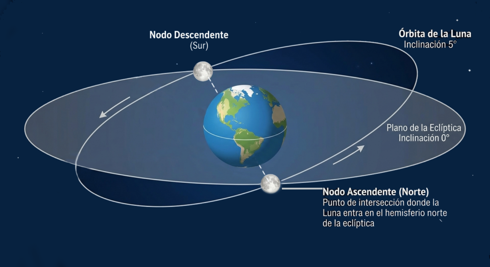
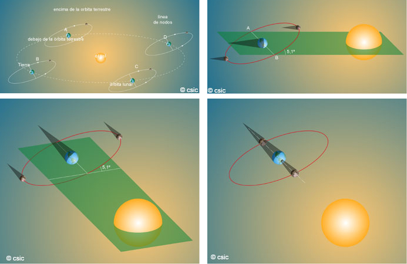
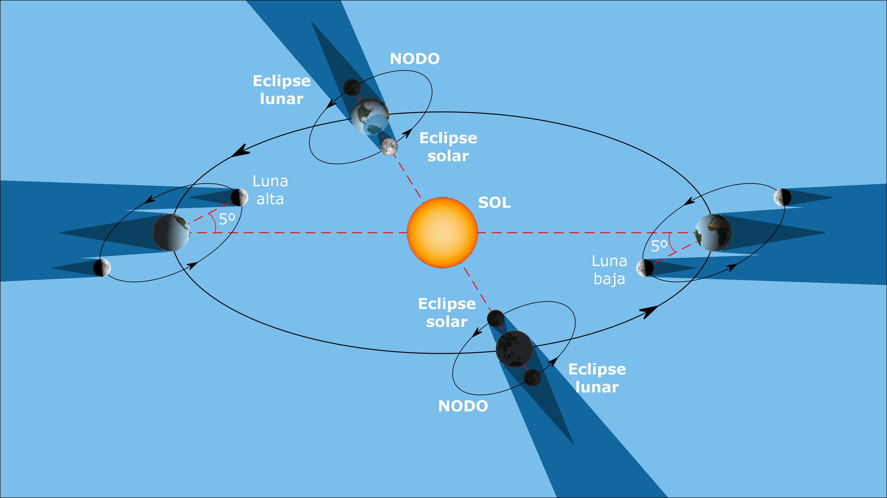

¿Por qué no tenemos un eclipse solar cada mes?
Si la Luna girara alrededor de la Tierra en el mismo plano en que lo hace la Tierra alrededor del Sol —es decir, sobre el plano de la eclíptica—, cada mes tendríamos un eclipse de Sol coincidiendo con la Luna nueva y otro eclipse de Luna coincidiendo con la Luna llena.
Esto no ocurre porque la órbita de la Luna está inclinada unos $5^\circ$ respecto al plano de la eclíptica. Es una inclinación pequeña, pero suficiente para que, la mayoría de las veces, la Luna se sitúe por encima o por debajo de la línea que une la Tierra y el Sol, haciendo que su sombra no llegue a proyectarse sobre nuestro planeta (o viceversa).
Lo cierto es que, si la Luna completa un giro alrededor de la Tierra cada 29,5 días aproximadamente, a lo largo de ese mes lunar cruzará el plano de la eclíptica exactamente en dos ocasiones. A esos dos puntos de intersección donde se cortan la órbita de la Luna y el plano de la órbita de la Tierra se les denomina nodos:
- Nodo ascendente: Es el punto en el que la Luna pasa de estar por debajo de la eclíptica a estar por encima.
- Nodo descendente: Por el contrario, es el punto en el que la Luna pasa de estar por encima a estar por debajo de la eclíptica.
A la línea imaginaria que une ambos puntos en cada órbita se la conoce como la línea de nodos. En la siguiente ilustración podéis ver este sistema representado tridimensionalmente.
En el dibujo de aquí, lo tenéis representado.

La dirección de la Línea de Nodos varía de unas órbitas a otras. Si aproximamos la duración de una órbita lunar a 30 días, podríamos decir que la línea de nodos, tiene una dirección diferente cada mes.
En esta imagen tenéis otra posición distinta de la línea de nodos

Solo se producirán eclipses cuando la línea de nodos esté alineada con el Sol y la luna esté en novilunio o plenilunio (imagen derecha abajo)
- Si la Luna está en novilunio (luna nueva) y está cerca de un nodo, puede producirse un eclipse de sol. En este caso, la Luna proyecta su sombra en la dirección donde está la Tierra
- Si la Luna está en plenilunio (luna llena) y está cerca de un nodo, puede producirse un eclipse de luna. La sombra de la Tierra se proyecta en la dirección donde está la Luna.
En cualquier otra fase de la Luna, aunque esté cerca de un nodo, la sombra se proyecta donde no está la Tierra.
De igual manera, Si la luna está en fase de luna nueva y no está cerca de un nodo, la sombra estará por encima o por debajo de la Tierra

Os proponemos hacer un modelo de órbitas de la Tierra y la Luna para comprobar cuando se puede haber una eclipse de Sol